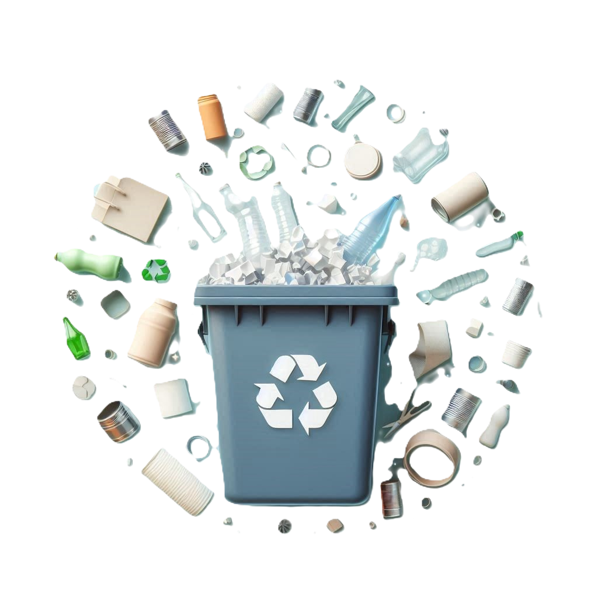

Reduce, reutiliza y recicla
Intenta reducir la cantidad de residuos que generas, reutiliza objetos siempre que puedas y recicla materiales como papel, vidrio y plástico.
Intenta reducir la cantidad de residuos que generas, reutiliza objetos siempre que puedas y recicla materiales como papel, vidrio y plástico.
Apaga las luces y los aparatos electrónicos cuando no los estés usando. Utiliza bombillas de bajo consumo o LED.
Opta por caminar, usar la bicicleta o el transporte público en lugar de conducir un coche. Esto ayuda a reducir las emisiones de gases de efecto invernadero.
Compra productos con certificación ecológica y evita los plásticos de un solo uso.
Cierra los grifos mientras te cepillas los dientes, toma duchas más cortas y reutiliza el agua cuando sea posible.
La energía solar se obtiene a partir de la radiación solar. Se puede utilizar para generar electricidad o para calentar agua.
La energía eólica se genera a partir del viento. Los aerogeneradores convierten la energía cinética del viento en energía eléctrica.
La energía hidroeléctrica se produce aprovechando la energía del agua en movimiento, como ríos o presas, para generar electricidad.
La energía geotérmica se obtiene del calor interno de la Tierra. Se utiliza para generar electricidad y para calefacción.
La biomasa se refiere a la materia orgánica que se puede utilizar como fuente de energía, como residuos agrícolas y forestales.